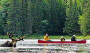

黄金周去哪儿疯？
加拿大安大略省纵情赏枫秋季旅行
滑动枫叶，比谁手快，赢安大略枫狂好礼
赏枫加拿大安大略省黄金枫景线
当秋风拂过加拿大时，安大略便迎来了最绚丽迷人的“枫”景。沉静的深红、火热的橙色，安大略是加拿大赏枫美景的绝佳目的地。从9月中旬到10月中旬，许多景区可以让您饱赏绝美画卷，来多伦多、尼亚加拉、阿冈昆公园、渥太华，亲赴一场大自然的秋季黄金时装秀！
- 渥太华

安大略秋季精选行程
为您倾情呈献与众不同的加拿大安大略秋之旅，尽情领略安大略旖旎的自然美景和悠久的历史文化。数不尽的美丽沙滩、原汁原味的美酒佳酿、珍奇独特的动植物、梦幻般的古老文明……快来亲身感受安大略这片神奇的国度，开启属于自己的安大略之旅吧！
|  |  | ||
|